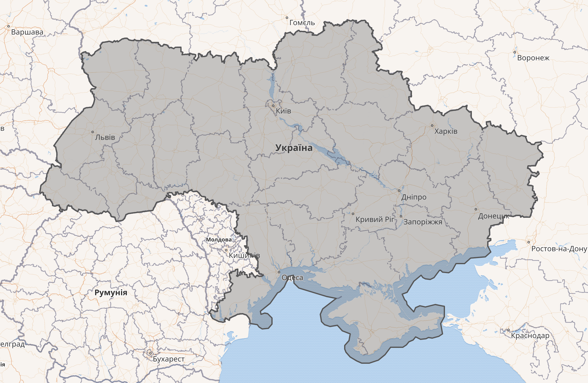
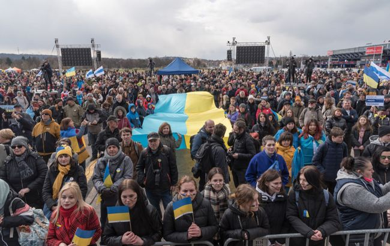
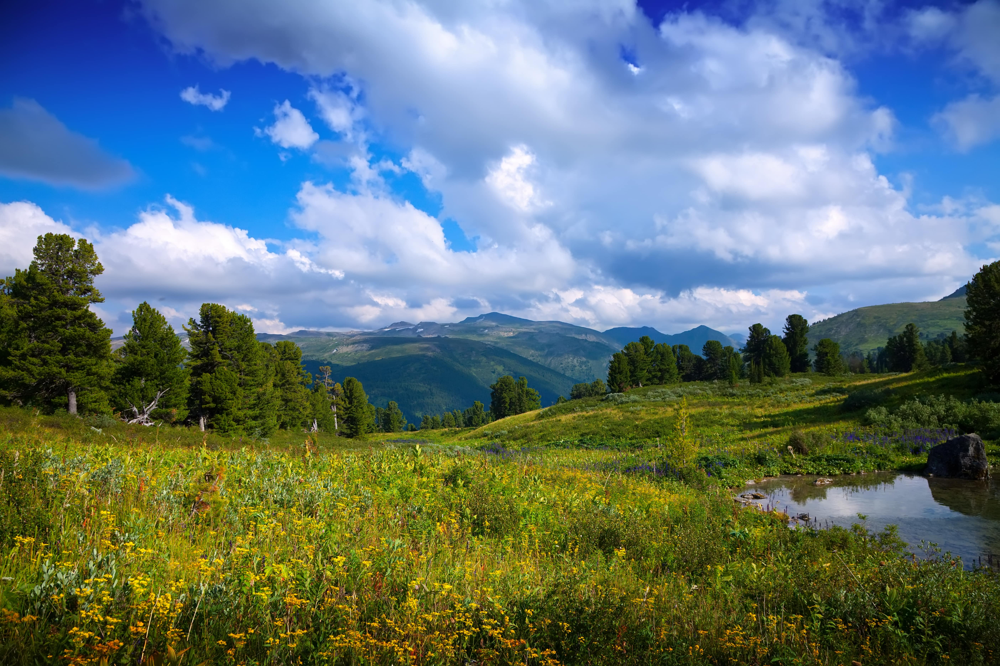
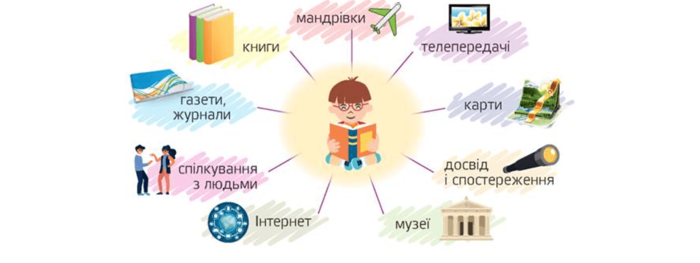

Украї́на — найбільша країна в Центрально-Східній Європі.

Україна – держава Центрально–Схiдної Європи. Вона займає південний захід Східноєвропейської рівнини, частину Карпат, Кримські гори. З пiвночi на південь Україна простягається на 893 кілометри, із заходу на схід – на 1316 кілометрів. Україна розташована в помірних широтах i має вихід до Чорного i Азовського морів. Геополітичне положення на межі західних i східних народів i культур значною мірою позначилось на історії та сучасному розвитку держави. Україна межує з Росією, Білорусією, Польщею, Словаччиною, Угорщиною, Румунією та Молдовою. ЇЇ кордони простягаються на 6 500 км.
Територія Української держави становить 603,7 тис. кв. км, або 5,7% території Європи i 0,44% території світу. За площею вона перевищує такі великі країни Європи як Францiя, Іспанiя, Швецiя, ФРН, Польща. Завдяки вигідному географічному розташуванню в центрі Європи та розгалуженій мережі авiацiйного, залізничного, морського та автомобільного транспорту Україна є транзитною для пасажирів та вантажів різних держав.

Населення країни – близько 46 млн. За кількістю населення Україна посідає 5 місце в Європі (після ФРН, Італії, Великобританії, Франції) та 21 місце у світі. На її долю припадає 7,3% населення Європи i 1% населення Землі. Бiльшiсть населення України (68%) проживає у містах. У сільській місцевості проживає 32% населення. Віруючі в Україні є прихильниками багатьох конфесій, серед яких найбільшими є християнські.
Українці — індоєвропейський слов'янський етнос, коріння якого на теренах України сягає ймовірно неоліту.Українці — індоєвропейський слов'янський етнос, коріння якого на теренах України сягає ймовірно неоліту.
В липні 2023 року аж 68% цілком погодилися з твердженням, що "до української нації належать усі, хто вважає Україну своєю батьківщиною, незалежно від національності, мови та релігії", а ще 24% - радше погодилися, тобто аж 92% загалом згодні, що українцями можуть бути всі українські громадяни, які цього захочуть.

Клімат в Україні помірно-континентальний за винятком субтропічного на південному узбережжі Кримського півострова. Найбільша річка України – Дніпро (довжина 2201 км, 981 км якої протікає через Україну). Найбільша гірська система – Карпатські гори, які простягаються на 270 км. Найвищий пік – Говерла (2061 м). 70% суші зайняті оранкою, 17% лісами, 4% – внутрішні води, 9% – інші землі.
Природа України дивовижна і різноманітна – ліси і степи, болота і гори, скелі і печери, ріки і моря, заплави і навіть пустеля. Вона закохує, надихає, дивує, вражає. Але вона така тендітна. Делікатні екосистеми беззахисні перед діями людини – інколи несвідомими, а подекуди відверто злочинними.
Ми успадкували безцінний скарб – Природу України. Ми хочемо зберегти цей наш природний спадок для світу, для наших дітей, забезпечити виживання та збереження унікальних природних цінностей, таких, як праліси, рідкісні типи оселищ, а також різноманіття тварин й рослин, як рідкісних, так і звичайних.

Книжки та відео про історію України та українців
- Короткий курс історії України Олександр Палій
- УПА. Історія нескорених Володимир В'ятрович Ігор Дерев'яний Руслан Забілий Петро Содоль
- Брама Європи. Історія України від скіфських воєн до незалежності Сергій Плохій
- Сад Гетсиманський Іван Багряний
- Козацький міф Сергій Плохій